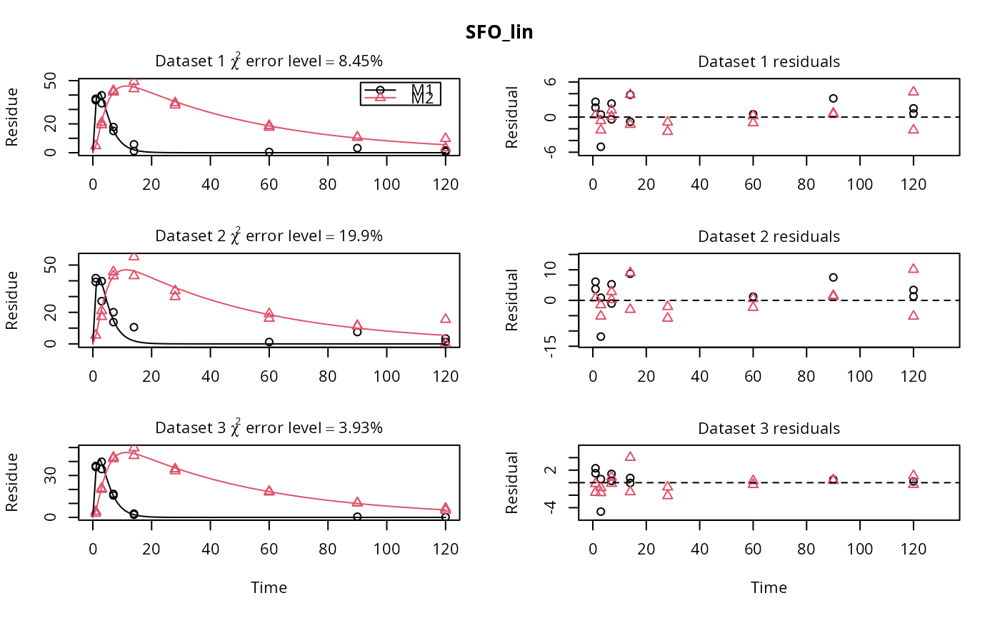
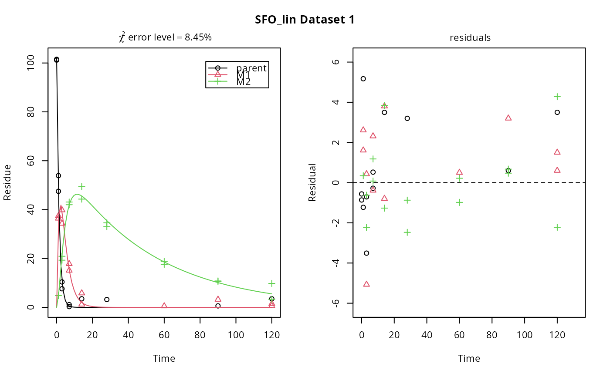

Fit one or more kinetic models with one or more state variables to one or more datasets
mmkin.RdThis function calls mkinfit on all combinations of models and datasets
specified in its first two arguments.
mmkin(models, datasets, cores = round(detectCores()/2), cluster = NULL, ...)
Arguments
| models | Either a character vector of shorthand names ("SFO", "FOMC", "DFOP",
"HS", "SFORB"), or an optionally named list of |
|---|---|
| datasets | An optionally named list of datasets suitable as observed data for
|
| cores | The number of cores to be used for multicore processing. This is only
used when the |
| cluster | A cluster as returned by |
| … | Further arguments that will be passed to |
Value
A matrix of mkinfit objects that can be indexed using the model
and dataset names as row and column indices.
See also
[.mmkin for subsetting, plot.mmkin for plotting.
Examples
m_synth_SFO_lin <- mkinmod(parent = mkinsub("SFO", "M1"), M1 = mkinsub("SFO", "M2"), M2 = mkinsub("SFO"), use_of_ff = "max")#>m_synth_FOMC_lin <- mkinmod(parent = mkinsub("FOMC", "M1"), M1 = mkinsub("SFO", "M2"), M2 = mkinsub("SFO"), use_of_ff = "max")#>models <- list(SFO_lin = m_synth_SFO_lin, FOMC_lin = m_synth_FOMC_lin) datasets <- lapply(synthetic_data_for_UBA_2014[1:3], function(x) x$data) names(datasets) <- paste("Dataset", 1:3) time_default <- system.time(fits.0 <- mmkin(models, datasets, quiet = TRUE)) time_1 <- system.time(fits.4 <- mmkin(models, datasets, cores = 1, quiet = TRUE)) time_default#> User System verstrichen #> 0.059 0.021 6.916time_1#> User System verstrichen #> 22.506 0.000 22.518#> $ff #> parent_M1 parent_sink M1_M2 M1_sink #> 0.7340480 0.2659520 0.7505686 0.2494314 #> #> $SFORB #> logical(0) #> #> $distimes #> DT50 DT90 #> parent 0.8777689 2.915885 #> M1 2.3257453 7.725959 #> M2 33.7200874 112.015706 #># Use double brackets to extract a single mkinfit object, which will be plotted # by plot.mkinfit and can be plotted using plot_sep plot(fits.0[[1, 1]], sep_obs = TRUE, show_residuals = TRUE, show_errmin = TRUE)plot_sep(fits.0[[1, 1]]) # Plotting with mmkin (single brackets, extracting an mmkin object) does not # allow to plot the observed variables separately plot(fits.0[1, 1])